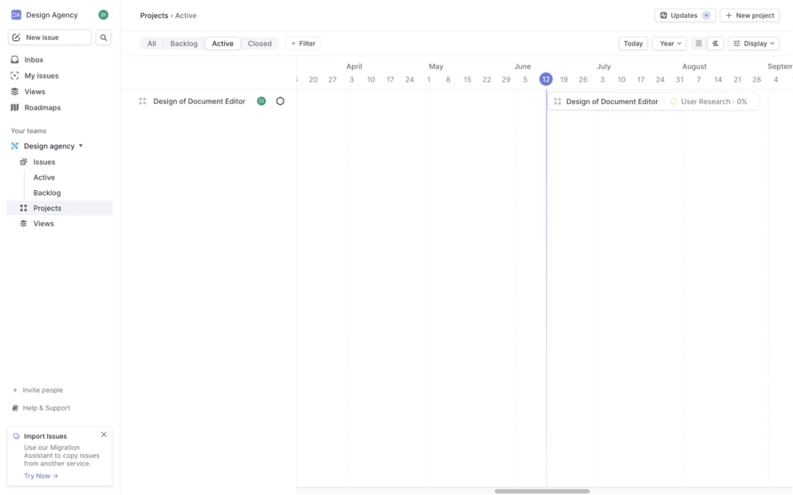
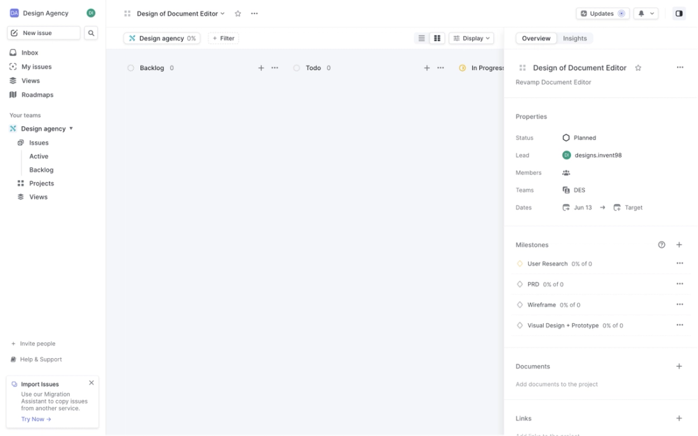
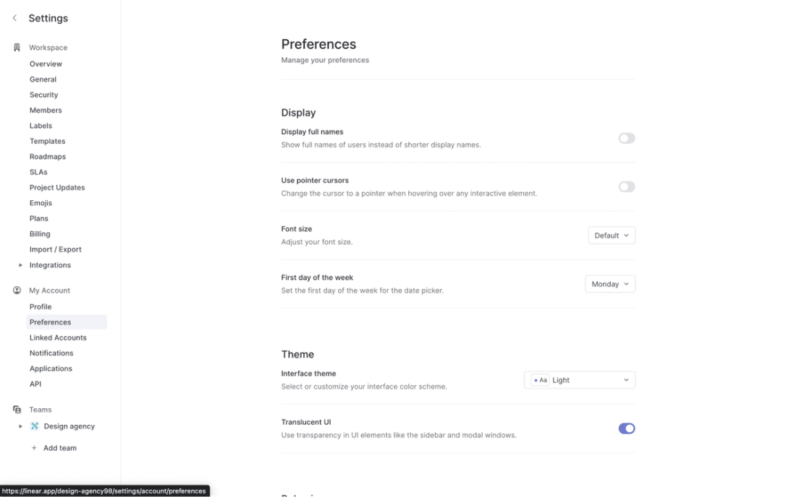
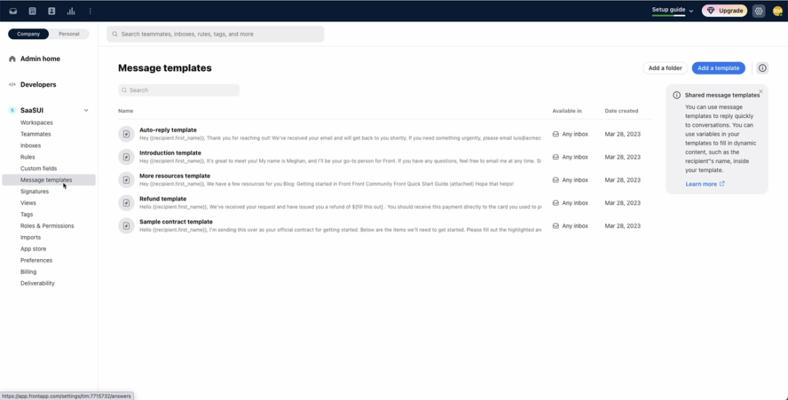
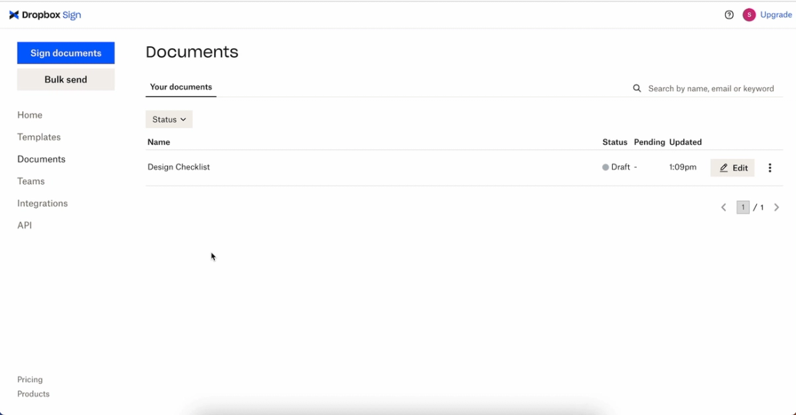
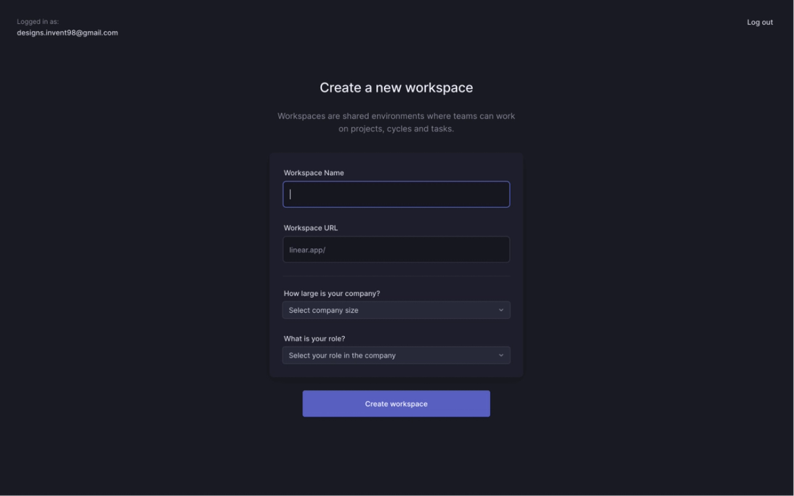
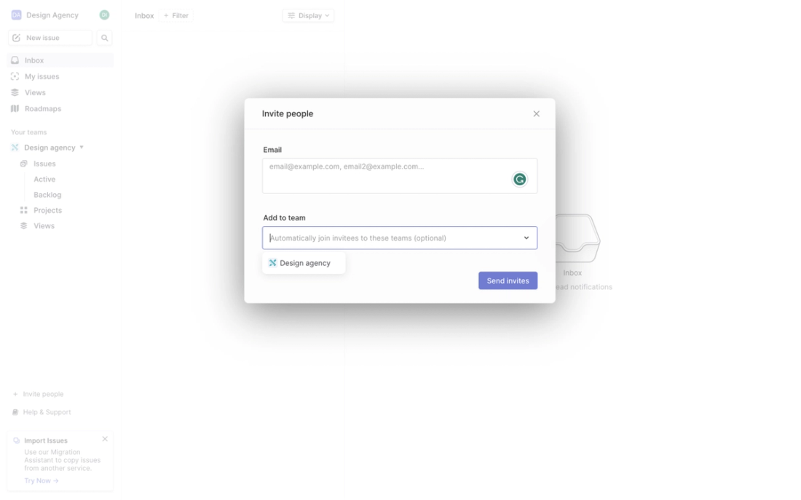
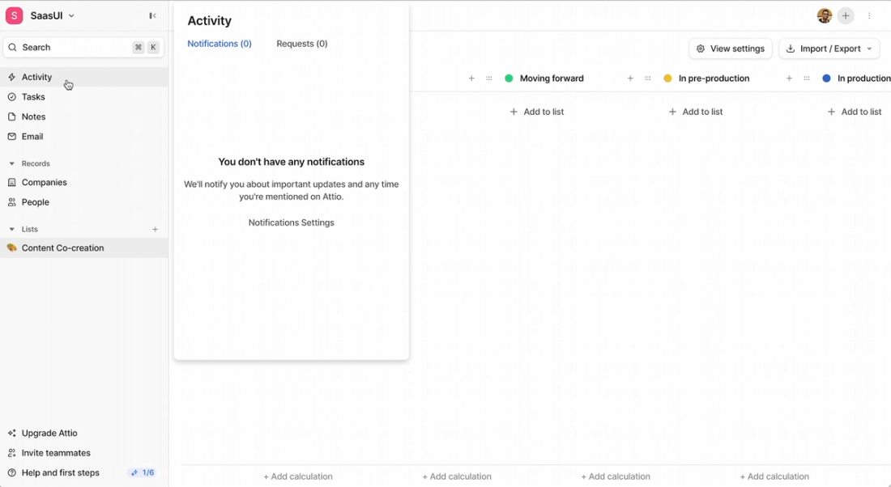
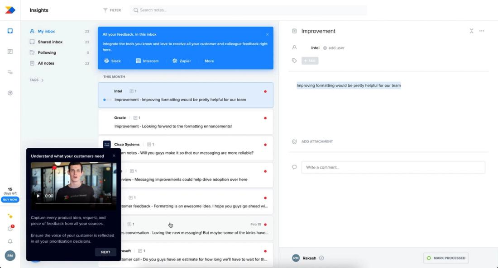
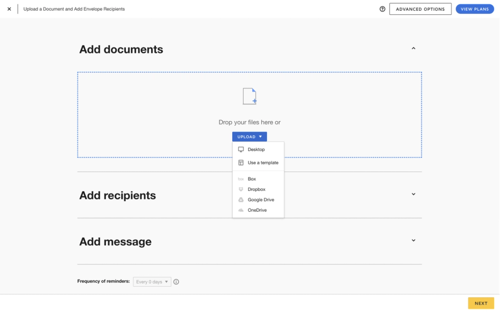

RP-01 · Linear작업 공간 왼쪽 내비게이션 + 본문 목록(Projects · Active)- URL
- https://www.saasui.design/pattern/dashboard/linear
- 확인 시각
- 2026-10-11T21:05:00+09:00
- 맞는 작업
- 파트장 앱: 승인 대기 · 호출 · 권한 등급 · 감사 기록 사이를 오가는 반복 업무
- 빌려 올 원리
- 고정된 왼쪽 내비와 넓은 본문 하나, 현재 위치 강조
- 빌려 오지 않을 것
- 프로젝트·로드맵·이슈 기능, 타임라인 화면

RP-02 · Linear프로젝트 상세 + 오른쪽 속성 패널(Properties · Milestones)- URL
- https://www.saasui.design/pattern/dashboard/linear
- 확인 시각
- 2026-10-11T21:05:00+09:00
- 맞는 작업
- 보고서 검토(L03), 호출 답하기(L04), 진단(T04)의 '내용 + 옆 판단 패널'
- 빌려 올 원리
- 본문 옆에 같은 대상의 속성·결정 영역을 나란히 둠
- 빌려 오지 않을 것
- 보드 열, 마일스톤·멤버 개념


RP-04 · Front관리 · Message templates 표(이름 · 미리보기 · 열 · 오른쪽 안내)- URL
- https://www.saasui.design/pattern/table/front
- 확인 시각
- 2026-10-11T21:05:00+09:00
- 맞는 작업
- 처리할 호출 목록(L04), 감사 기록(L06)
- 빌려 올 원리
- 왼쪽 관리 내비 + 열이 정해진 표 + 표 옆 짧은 안내
- 빌려 오지 않을 것
- 템플릿·받은편지함 기능






RP-08 · DocuSign봉투 만들기(순서 있는 단계 섹션 + 아래 고정 Next)- URL
- https://www.saasui.design/pattern/form/docusign
- 확인 시각
- 2026-10-11T21:05:00+09:00
- 맞는 작업
- 정비자 앱 단계 진행(알람 → 보고서), 점검 지시 · 체크리스트(T06, T08)
- 빌려 올 원리
- 정해진 순서의 단계와 한 번에 하나의 주 행동
- 빌려 오지 않을 것
- 문서 업로드·수신자 기능, 고급 옵션